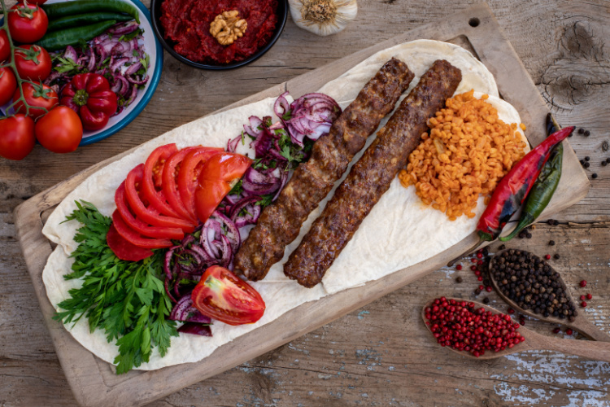

Home
Kebab

Best Turkish Kebab
The Turks just do the lamb kebab different, the succulent meat juices, so pleasing.
Ingredients
- 500g ground lamb or beef
- 1 small onlin, finely chopped
- 2 cloves garlic, minced
- 1 teaspoon ground cumin
- 1 teaspoon paprika
- Salt and pepper to taste
- Chopped parsley (optional)
- Skewers
Steps
- Preheat your grill or oven to medium-high heat
- In a bowl, combine the ground meat, onlin, garlic, cumin, paprika, salt, and parsely.
- Mix well until the ingredients are fully combined.
- Shape the mixture onto skewers in long, sausage-like shapes.
- Grill the kebabs for 4-5 minutes on each side
- Remove from the grill and let them rest for a couple of minutes
- Serve hot with flatbread, rice, or salad